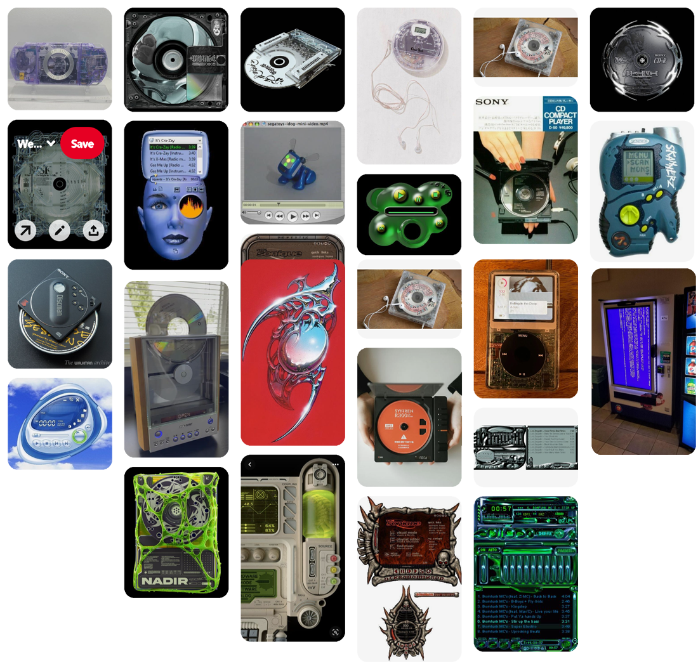
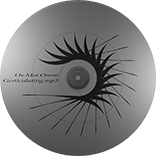
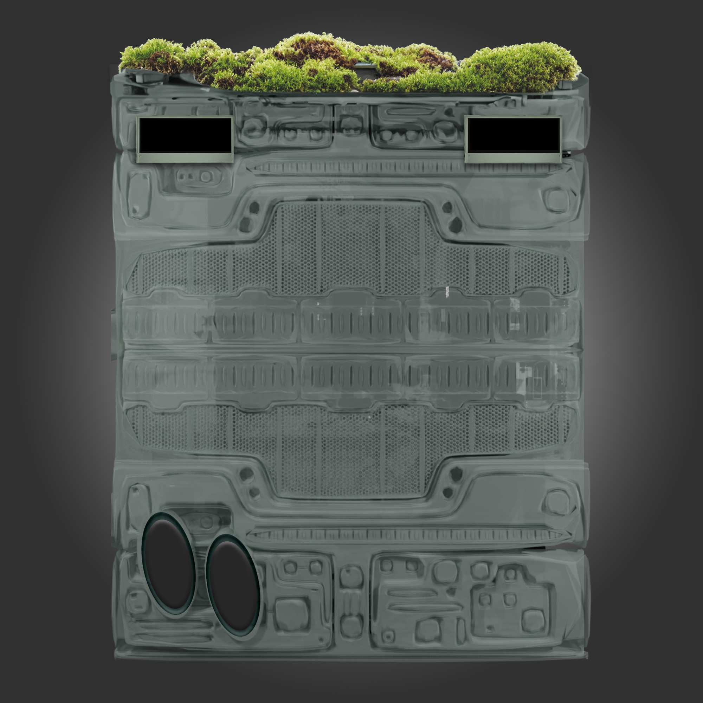
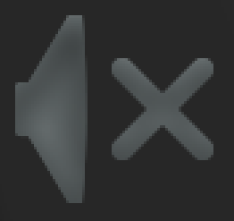
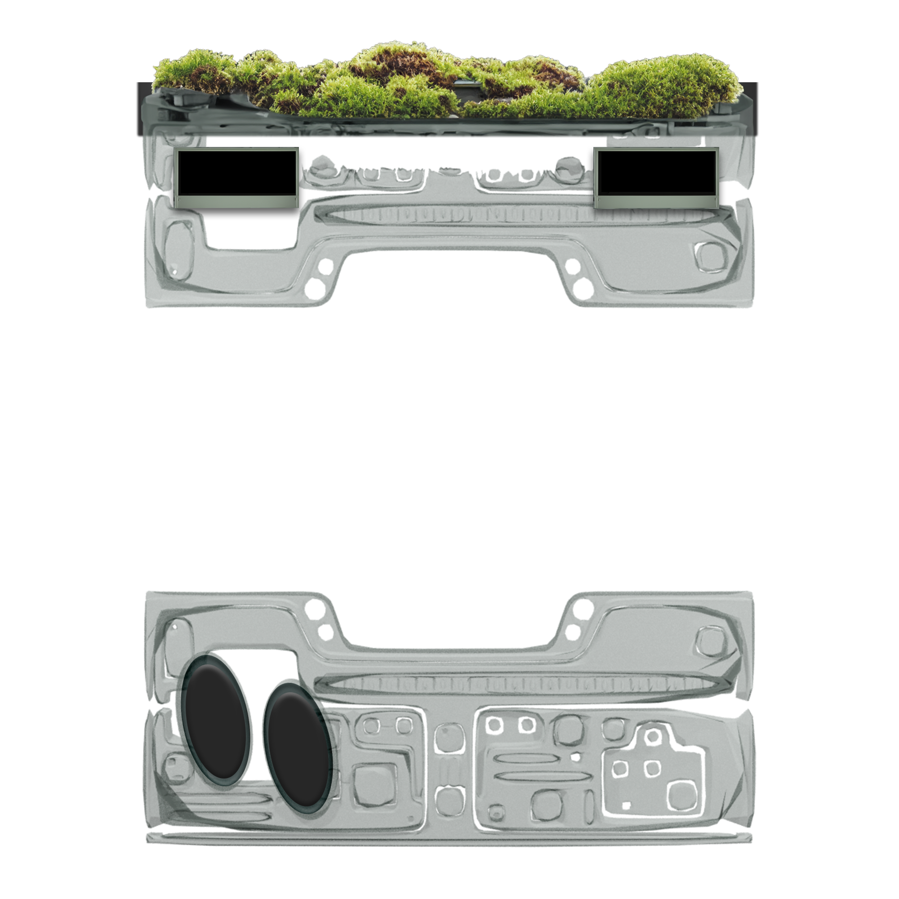
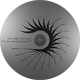
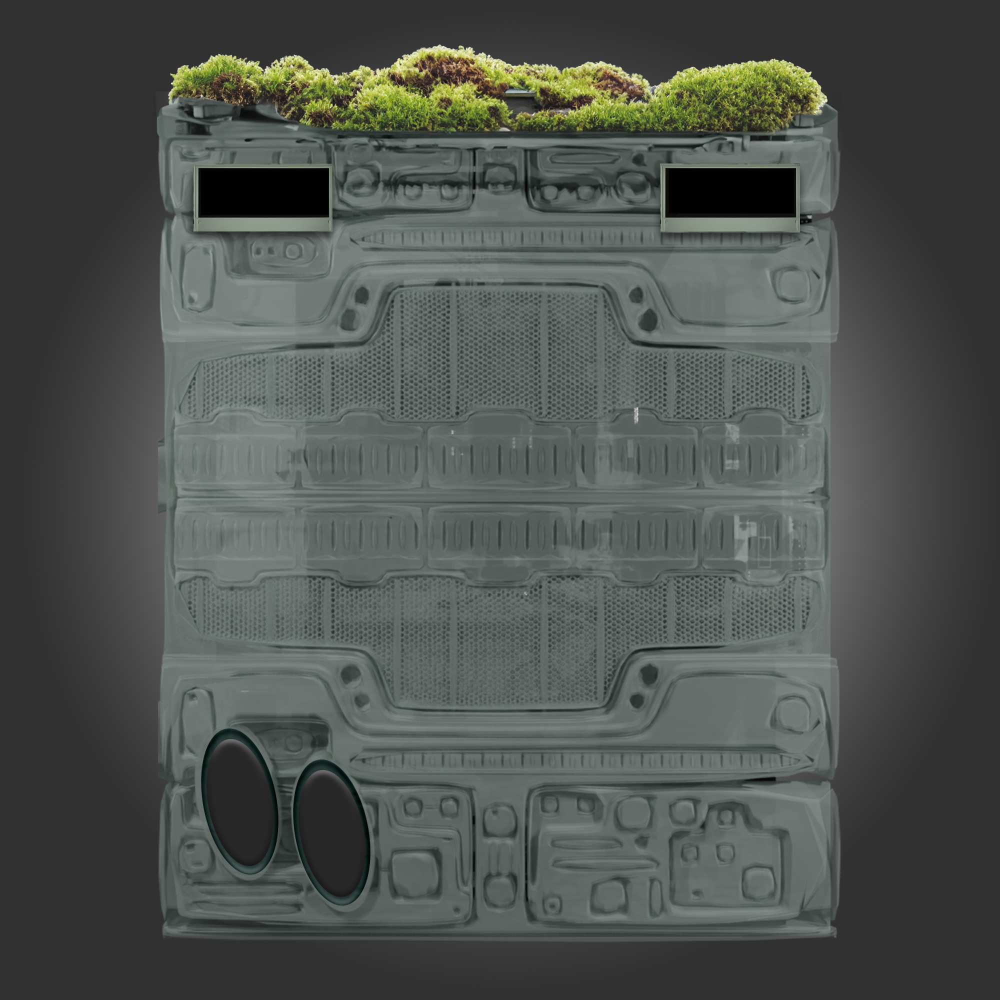
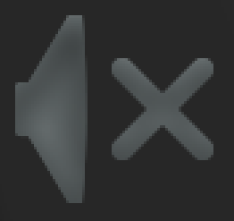
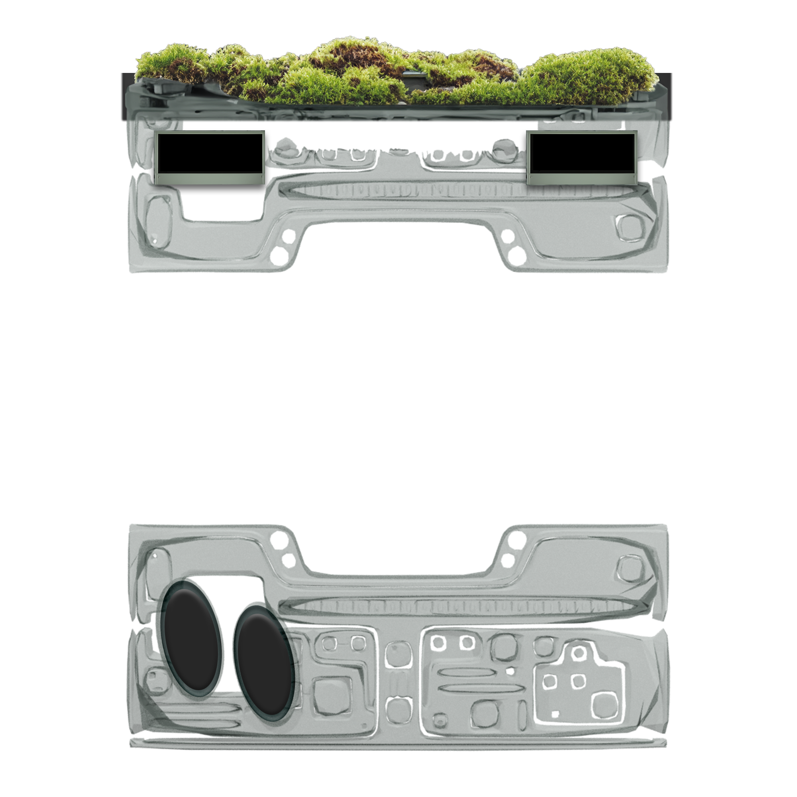

Progress Documentation
here is my some additional documentation for my project to give additional support to the commenting in my HTML, CSS and JAVA.
My initial process for deciding what sort of interaction I was after was to look for inspiration for
from other media players and on pinterest to discover what aesthetic I would like my
design to be.
Below is my initial moodboard where i drew inspiration for my final design

For the key feature i drew main inspiration from spotify and soundcloud, below is a screenshot of the spotify user interface.
 Initially when creating my new feature. Which is being able to read the current playback time of the media player I had in mind that on the other side the number would simply be a static of the total duration of the song. After looking to these different popular streaming platforms I noticed that the most common design choice is to have featured the time remaining of the track. Therefor I decided to change my code
Initially when creating my new feature. Which is being able to read the current playback time of the media player I had in mind that on the other side the number would simply be a static of the total duration of the song. After looking to these different popular streaming platforms I noticed that the most common design choice is to have featured the time remaining of the track. Therefor I decided to change my code
I have added notes in my javascript on the math used to be able to convert the currentLengthOnlySec into minutes and seconds in the format MM:SS
Changing the progress bar
I decided to use java to take the total length and the current playback time and convert it into a percentage. I then used this percentage to move the new div I had created along the width of the parent div which in turn aligned with the progress bar underneath. Then I set the pointerEvents to null so that the user can still access the underlying interactable prog bar that was included in the code. I then set the underlying background image to my custom dial I created in photoshop.
Below I will put all my separated elements I have used and made for my site.
Aswell as additional screenshots from my progress.
 






